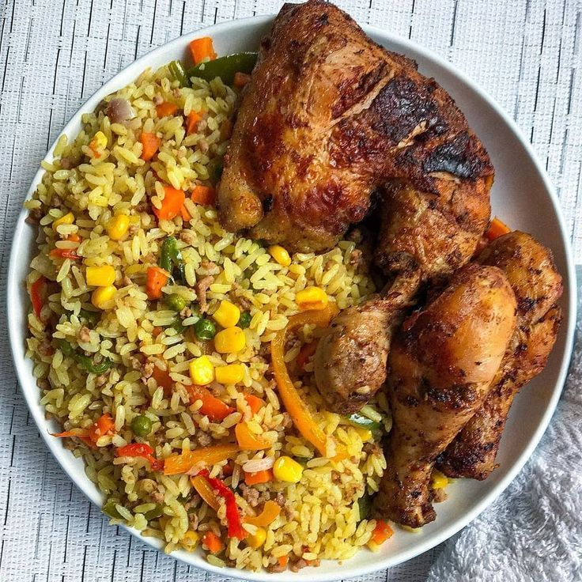

Fried Rice Recipe

Fried rice is a flavorful and colorful dish made by stir-frying cooked rice with vegetables, protein, and seasonings.
It is a popular meal in many cultures, known for its versatility and delicious taste.
Ingredients
- 2 cups cooked rice
- 1 cup mixed vegetables (carrots, peas, sweet corn)
- 1/2 cup diced chicken, shrimp, or beef (optional)
- 2 tablespoons vegetable oil
- 1 small onion, chopped
- 1 teaspoon curry powder
Cooking Instructions
- Heat the vegetable oil in a large skillet or wok over medium heat.
- Add the chopped onion and sauté until translucent.
- If using, add the diced chicken, shrimp, or beef and cook until browned.
- Add the mixed vegetables and stir-fry for 2-3 minutes.
- Add the cooked rice and curry powder, stirring well to combine.
- Cook for an additional 5-7 minutes, stirring occasionally, until heated through.
home page